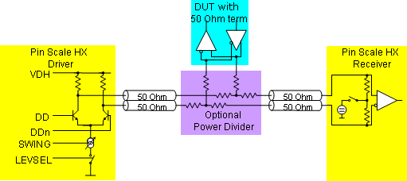
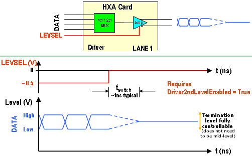

Bidirectional signalling
Pin Scale HX cards are designed to support bidirectional signalling.
The graphic below illustrates how to connect a bidirectional DUT I/O to Pin Scale HX cards.

Controlling the termination level of dual transmission lines
When the device is in output mode, the Pin Scale HX card driver component of the dual transmission line must terminate the line. The Pin Scale HX card driver offers two sets of HIGH and LOW levels, which means you can switch between four different termination levels.
The driver termination level is fully controllable but determined by the DUT characteristics. The example in the figure below shows a mid-level termination.

The HXA card driver "Level Select" pin (LEVEL) supports a second "Driver High Level" and a second "Driver Low Level" setting for the differential swing amplitude and common mode of the data signal out of the HXA card driver to the DUT.
This feature is used if the termination levels of the dual transmission lines are different from the normal driver high and low levels. See also Driver & Receiver Setup Area and Drive Level Selection Pins.
Layout for Bidirectional Signalling
To support bidirectional signalling, the level select signal (LEVSEL) must be routed accordingly on the DUT board.
Functional changes
- Introduced before SmarTest 6.3.2